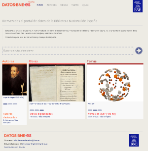
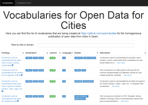
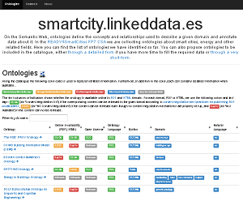
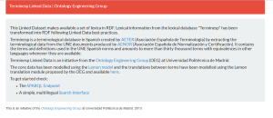
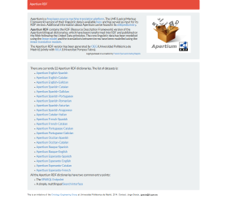

LinkedData.es
In this web, you will find the major initiatives, applications, websites and collaborations developed by the OEG. You will also find tools, awards and other iniatives no longer maintained.
datos.ign.es
datos.ign.es is an initiative of the National Geographic Institute (IGN) for the generation of semantic information of its resources in which the OEG has participated.
datos.bne.es
datos.bne.es initiative is part of the project "Linked data at the BNE", supported by the Spanish National Library (BNE) in cooperation with the OEG. With this initiative, the BNE takes the challenge of publishing bibliographic and authority data in RDF, following the Linked Data Principles and under the CC0 open license.

esDBpedia
esDBpedia contains the semantic information extracted from the Wikipedia in Spanish. OEG hosts the Spanish Chapter of DBpedia. 40% of the Spanish Wikipedia pages are not available in the English version. This makes it a valuable source of local information. In the Spanish DBpedia SPARQL endpoint the most relevant triples (~170 millions) are available.

Open Data Zaragoza
Open Data Zaragoza is an initiative of Zaragoza City Hall to promote the reuse of the information published in its website by citizens, companies and other institutions. OEG is supporting development and vocabulary definitions thanks to its knowledge in Linked Data principles.

vocab.linkeddata.es
vocab.linkeddata.es/datosabiertos
vocab.linkeddata.es/datosabiertos shows the list of vocabularies that are being created at https://github.com/opencitydata for the homogeneous publication of open data from cities in Spain.

SmartCity Catalogues
SmartCity catalogues collect ontologies and datasets about smart cities, energy and related fields. This work is developed within Ready4SmartCities European Project thatintends to increase awareness and interoperability for the adoption of ICT and semantic technologies in energy system to obtain a reduction of energy consumption and CO2 emission at smart cities communities level through innovative relying on RTD and innovation outcomes and ICT-based solutions

Terminesp Linked Data
Terminesp Linked Data is an initiative to transform into RDF, following Linked Data best practices, the lexical information from the lexical database Terminesp. Terminesp is a terminological database in Spanish created by AETER (Asociación Española de Terminología) by extracting the terminological data from the UNE documents produced by AENOR (Asociación Española de Normalización y Certificación). It contains the terms and definitions used in the UNE Spanish norms and amounts to more than thirty thousand terms with equivalences in other languages whenever they are available.

Apertium RDF
Apertium RDF contains the RDF (Resource Description Framework) version of the Apertium bilingual dictionaries, which have been transformed into RDF and published on the Web following the Linked Data principles. The core linguistic data has been modelled using the lemon model and the translations between terms have been modelled using the lemon translation module.

RDF License dataset
RDF License dataset provides an RDF representation of different licenses for data, software or general works. Licenses served under http://purl.oclc.org/NET/rdflicense/ are understood by humans and machines alike.